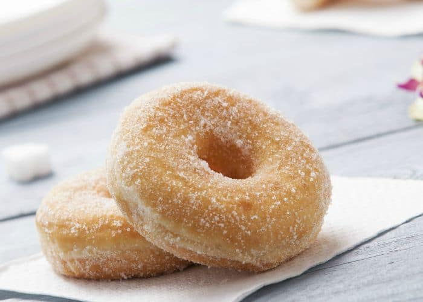

Potato Doughnut

Description
As a special treat in winter, my parents would make a double batch of these doughnuts to welcome us six kids home from school. This recipe from my great-aunt has been handed down through the generations.
Ingredient
- 1 package (1/4 ounce) active dry yeast
- 1 cup warm buttermilk (110° to 115°)
- 1-1/2 cups warm mashed potatoes (without added milk and butter)
- 3 eggs
- 1/3 cup butter, melted
- 3 cups sugar, divided
- 4 teaspoons baking powder
- 1-1/2 teaspoons baking soda
- 1 teaspoon salt
- 1 teaspoon ground nutmeg
- 6 cups all-purpose flour
- Oil for deep-fat frying
- 1/2 teaspoon ground cinnamon
Steps
- In a large bowl, dissolve yeast in warm buttermilk. Add potatoes, eggs and butter. Add 2 cups sugar, baking powder, baking soda, salt, nutmeg and 3 cups flour. Beat until smooth. Stir in enough remaining flour to form a soft dough. Do not knead. Cover and refrigerate for 2 hours.
- Turn onto a floured surface; divide into fourths. Roll each portion to 1/2-in. thickness. Cut with a floured 3-in. doughnut cutter.
- In an electric skillet or deep-fat fryer, heat oil to 375°. Fry doughnuts, a few at a time, until golden brown on both sides. Drain on paper towels. Combine remaining 1 cup sugar and cinnamon; roll doughnuts in cinnamon-sugar while warm.